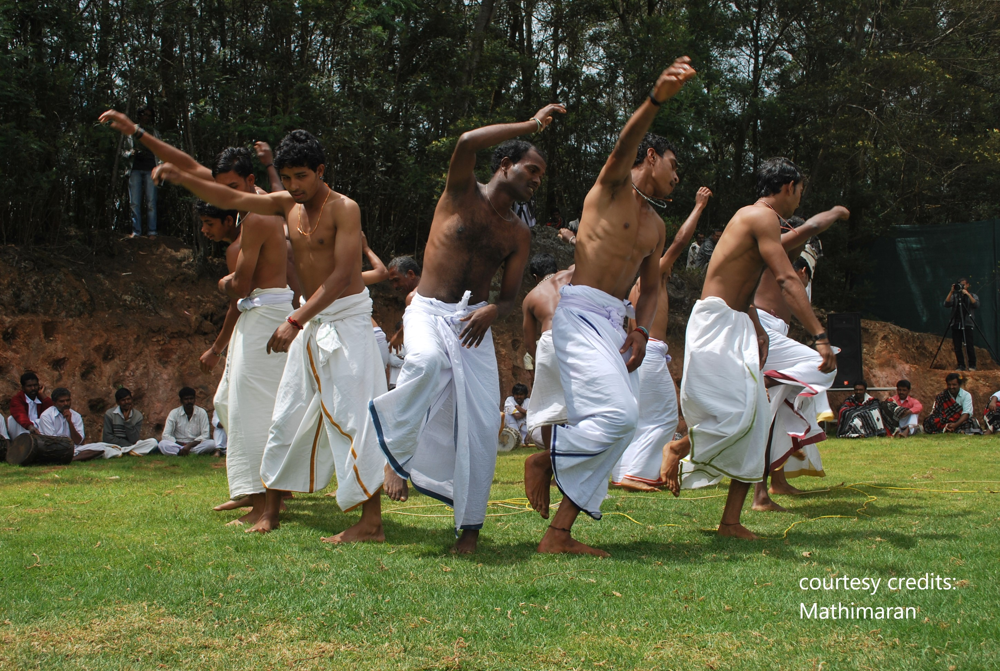

The mountainous region of the Nilgiris in Tamil Nadu is unique for the variety and abundance of its natural and human life. Because of its altitude and equatorial proximity, the land offers ideal conditions for distinct ranges of forest cover and grasslands.
In Tamilnadu, among the 36 scheduled tribes, the government of India identifies six communities as Primitive Tribal Groups(PTGs).Todas, Kotas, Kurumbas, Irulas, Paniyas, and Kattunayakans.All these six PTGs live in the Nilgiri district. Among them four PTGs,Todas,Kotas,Kurumbas and Paniyans live exclusively only in the Nilgiri district. The other two Irulas and Kattunayakans live in Nilgiri district as well as in other districts of Tamilnadu.

The Todas are tribal pastoral people who live in the Nilgiri Hills. Also known as the Todava, Ton and Tutavar, they have received a great deal of attention over the years from anthropologists because of their unusual marriage customs and other cultural features. They have always been a small group. A Jesuit priest said there were “about a thousand” in 1603. In the 1950s there numbers fell below 500. There are around 1,100 today, with another 100 or so Christian Toda, some of whom have intermarried with non-Todas.
The Todas are linguistically, culturally and economically distinct. They speak a Dravidian language like the other peoples of the Nilgiri Hills and southern India but their language has no written form and for the most part is not understood by non-Toda. Their skin and eyes are lighter in color and they have longer noses than the Tamils of southern India. They have traditionally been buffalo and cattle herders utilizing grasslands called sholas, while those around them have traditionally been farmers or forest people.

Some have speculated that the Todas might have come from ancient Greece, Israel, Sumatra, the Danube basin or some other such place but the linguistic evidence clearly places them in southern India. The first reference of them on a historical document is on a stone inscription dated to A.D. 1117. Their homeland in the highlands meant that they were relatively undisturbed regardless of who ruled the plains below them. In recent years the Todas have become more absorbed into Indian society and many of the customs that made them unique are no longer practiced or have been modified.
The Kotas are a group thought to be indigenous to the Nilgiri Hills of Tamil Nadu. Also known as the Cohatur, Kohatur, Kotar, Koter and Kothur, they are classified as a Scheduled Tribe and have traditionally lived among the Badagas, Todas and Kurumbas. Even though they are small in number (there are around 1,500 of them) they have managed to rise above their traditional roles as servants and consumers of carrion flesh to be influential bankers, doctors and civil servants in the Nilgiri Hills area.
In the old days the Kotas lived in wattle and daub houses with thatched roofs. Their villages had special houses for menstruating women but no toilets. They traditionally only grew a few crops themselves and obtained most for their food by trading various goods and services with their neighbors, primarily the Badagas. They have traditionally sacrificed water buffalos and were known as fine musicians and musical instrument makers. They often performed at Badaga and Toda funerals. The Kotas had a reputation for being a jack of all trades and the provided services such as blacksmithing, music, leatherworking and pottery making for other groups such as the Toda and Badanga in return for food and clothes.
Women have traditionally given birth in special huts. Ten days after birth a child is given a name. The ceremony for this is often regarded as more important than a wedding ceremony. In the ceremony a village elder gives the child his or her name while feeding water and a few crumbs of rice to the child. Afterwards a lock of hair is cut and wrapped in cow dung and leaves and tossed away. At the age of 16, boys and girls undergo a head shaving ritual in which all their hair is shaved off except for one lock. Tattooing is also common.
The Kota practice “green” and “dry” funerals. During a normal or “green” funeral the deceased is honored in a simple ceremony led by a small boy called the “fire-keeping boy” and is cremated in a special place called the dav nar (death region). A piece of the forehead bone is saved for the dry funeral. In the dry funeral the bone is serenaded with special music from double-reed instruments and barrel drums.

The Irulas are a Scheduled tribe that lives in northern Tamil Nadu and the Nilgiri Hills. They are sort of like a cross between tribals and ordinary southern Indians. They have many animist beliefs but have had enough contact with Hindus to embrace many orthodox Hindu beliefs. Their most important sacred objects are kept in a secret cave so they are not polluted by coming in contact with things defiled by humans. Many Irula live near old megalithic sites which has led some to speculate that are a very old culture. There are around 110,000 of them.
The Irulas live in villages with special “pollution hut” for menstruating women, lots of mango and jackfruit trees, and ancestral temples with stones in them that represent the dead. Many live in two-room houses with a separate room with a sacred fire. They are known as collectors of honey and hunt with nets and spears. They harvest millet with impossibly small sickles for harvesting individual grain heads. Much of their traditional land has been lost to tea and coffee plantations.

The Irulas are known for being inspired musicians, They produce their own flutes and drums and are employed by other tribes such as the Toda and Badaga to perform at their funerals. During Irula funerals a priest goes into trance and is asked by the family of deceased whether the death was natural or the result of sorcery. If the latter is the case a number of rituals are performed before the deceased is buried. After a month a stone is placed in a temple to give the deceased a place to stay.
The Irula marriage process used to be initiated by a trial cohabitation initiated with a delivery of firewood to the bride’s house by the groom but this is no longer practiced. A standard bride price is paid in the presence of elders. The marriage ceremony revolves around the tying of a necklace around the brides neck. If a wife is unable to produce a child the husband is allowed to take a second wife. Some women have tattoos and wear toe rings.

The Kurumbas are another group that lives in the Nilgiri Hills. There are seven major Kurumba groups: the Alu (milk)-Kurumbas , Palu (milk) -Kurumbas, Betta (hill)-Kurumbas, Jenu (honey)-Kurumbas, Mulla (net)-Kurumbas, Urali (village)-Kurumbas, and Mudugas. Each group[ is regarded as a separate ethnic group, with its own dialect, religious beliefs and other cultural features. There are about 15,000 Kurumbas. About a third of them live in the Nilgiri District. Others are scattered across southern India. They are regarded as the poorest of the Nilgiri Hills groups.
The Kurumbas have traditionally been hunters and gatherers. They forage a variety of foods from the forest and hunted and trapped birds and animals. They lived in rock shelters and caves and grew bananas, mangos and jackfruit in forest gardens. Deforestation had driven them out of their traditional villages into the plains, where they work in tea and coffee plantations.
The Kurumbas have a reputation of being sorcerers. Traditionally, the Badaga hired an individual Kurumba man who act as guardians for specific villagers. This was a lifelong job that was passed down from father to son. This individual was employed as a diviner, exorcist. and sed gerbs, spells and rituals to cure the sick. Because of the knowledge of sorcery Kurumba were greatly feared.

The Nayaka is another group that lives in the Nilgiri Hills. Traditionally regarded as honey collectors and people of the forest, they are also known as the Jenu Kurumba, Kattu Naika, Kattu Nayaka, Naicken and Sola Nayaka. They have traditionally lived in huts in the forest and migrated every six to 18 months. There are only around 1,400 of them.
Nayaka have no history of animal husbandry or cultivation other than having a few fruit trees near their huts. They have traditionally subsisted primarily on wild yams, nuts, berries and fruit that they collected and fish and trapped animals. In olden days, they hunted deer with dogs. They collect items from the forest such as medicinal herbs that can be traded or bartered for things they need like grain, cooking pots and utensils. They have worked on plantations and done other work to make money.
Nayaka have no formal marriage ceremony. A couple is generally regarded as married when they start sleeping together and sharing the same hearth. The Nayakas are friendly but independent. They generally don’t form strong lasting relationships outside their conjugal families. Their society is very egalitarian, There are no real administrative groups. Their religious beliefs are mostly animist with some Hindu deities in their pantheon of gods and spirits. The only life-cycle event that they honor with a ritual is death.
The Paniyas, also known as Paniyar and Paniyan, are an ethnic group of India. The Paniya speak the Paniya language, which belongs to the Dravidian family. A scheduled tribe, they have a population of around 94,000 individuals.The Paniya have historically worked as agricultural labourers. They are believed to have been brought to Wayanad by the king of Malabar, and thereafter tilled the land as serfs. Following the abolishment of the slave-holding system, the Paniya were resettled in different areas established by the government.